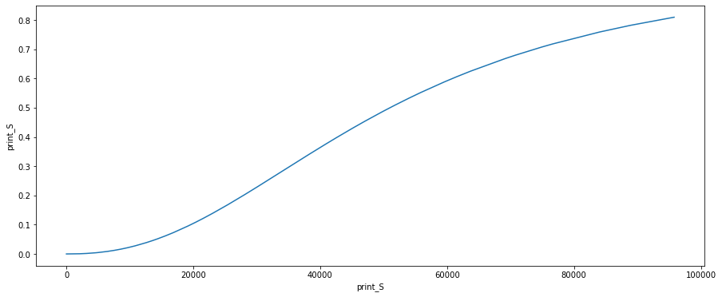

import pandas as pd
import numpy as np
import matplotlib.pyplot as plt
import seaborn as sns
import optuna
from functools import partial
from sklearn.linear_model import Ridge
from sklearn.model_selection import TimeSeriesSplit, cross_validate
from sklearn.metrics import mean_squared_error, mean_absolute_percentage_error, mean_absolute_error
from scipy.linalg import LinAlgWarning
import warnings
# glmnet packages
from glmnet import ElasticNet
warnings.filterwarnings("ignore", category=FutureWarning)
warnings.filterwarnings('ignore', category=LinAlgWarning)
warnings.filterwarnings('ignore', category=RuntimeWarning)
pd.set_option('display.float_format', lambda x: '%.5f' % x)
np.set_printoptions(suppress=True)
#suppress exponential notation, define an appropriate float formatter
#specify stdout line width and let pretty print do the work
np.set_printoptions(suppress=True, formatter={'float_kind':'{:16.3f}'.format}, linewidth=130)
---------------------------------------------------------------------------
ModuleNotFoundError Traceback (most recent call last)
Cell In[1], line 1
----> 1 import pandas as pd
2 import numpy as np
3 import matplotlib.pyplot as plt
ModuleNotFoundError: No module named 'pandas'
df = pd.read_csv("/Users/pedro.hcardoso/dev/book/marketing-book/datasets/weekly_ad_spend.csv")
df
| DATE | revenue | tv_S | ooh_S | print_S | facebook_I | search_clicks_P | search_S | competitor_sales_B | facebook_S | events | newsletter | |
|---|---|---|---|---|---|---|---|---|---|---|---|---|
| 0 | 2015-11-23 | 2754371.66667 | 67075.04000 | 0.00000 | 38185.46667 | 72903852.71259 | 0.00000 | 0 | 8125009 | 22821.39874 | na | 19401.65385 |
| 1 | 2015-11-30 | 2584276.66667 | 85840.36000 | 0.00000 | 0.00000 | 16581099.54533 | 29511.71546 | 12400 | 7901549 | 3425.85735 | na | 14791.00000 |
| 2 | 2015-12-07 | 2547386.66667 | 0.00000 | 396835.20000 | 1361.60000 | 49954773.67047 | 36132.35896 | 11360 | 8300197 | 12769.12613 | na | 14544.00000 |
| 3 | 2015-12-14 | 2875220.00000 | 250350.92000 | 0.00000 | 53040.00000 | 31649297.02879 | 36804.21096 | 12760 | 8122883 | 8401.47203 | na | 2800.00000 |
| 4 | 2015-12-21 | 2215953.33333 | 0.00000 | 832008.00000 | 0.00000 | 8802269.47875 | 28401.74407 | 10840 | 7105985 | 2068.74782 | na | 15478.00000 |
| ... | ... | ... | ... | ... | ... | ... | ... | ... | ... | ... | ... | ... |
| 203 | 2019-10-14 | 2456240.00000 | 0.00000 | 96692.80000 | 61489.46667 | 0.00000 | 152840.32341 | 44840 | 7612762 | 0.00000 | na | 28157.00000 |
| 204 | 2019-10-21 | 2182825.00000 | 61967.04000 | 0.00000 | 0.00000 | 56881962.23521 | 103680.04782 | 41480 | 6701667 | 13362.45755 | na | 10644.00000 |
| 205 | 2019-10-28 | 2377706.66667 | 8793.00000 | 22550.40000 | 6990.40000 | 0.00000 | 138387.70414 | 45880 | 7688920 | 0.00000 | na | 9597.00000 |
| 206 | 2019-11-04 | 2732825.00000 | 8981.20000 | 0.00000 | 9620.53333 | 0.00000 | 151707.99046 | 53640 | 8815710 | 0.00000 | na | 90189.00000 |
| 207 | 2019-11-11 | 2767788.33333 | 0.00000 | 0.00000 | 0.00000 | 127981119.76524 | 0.00000 | 0 | 9067759 | 36619.07594 | na | 19401.65385 |
208 rows × 12 columns
def adstock_transform(x, retention_rate, duration=13, peak_delay=None, method='geometric'):
x_adstock = np.zeros_like(x)
if method == 'convolution':
if peak_delay:
weights = [retention_rate**((w-peak_delay)**2) for w in range(0, duration)]
else:
weights = [retention_rate**w for w in range(0, duration)]
x_adstock = x.rolling(duration, min_periods=1).apply(lambda x: np.average(x[::-1], weights=weights[:len(x)]))
if method == 'geometric':
x_adstock = x + x.shift(1).fillna(0)*retention_rate
return x_adstock
def hill_transform(x, slope, inflexion):
inflexion = np.dot((np.min(x), np.max(x)), (1- inflexion, inflexion)) # linear interpolation/extrapolation by dot product
x_hill = x**slope / (x**slope + inflexion**slope)
return x_hill
x = df['facebook_S']
x_decayed = np.zeros_like(x)
x_decayed[0] = x[0]
x_adstock = adstock_transform(x, 0.38)
x_hill = hill_transform(x_adstock, 3.0028976949766872, 0.5279674468947023)
plt.subplots(figsize=(8,6))
sns.lineplot(x=x_adstock, y=x_hill)
plt.show()
control_features = ['competitor_sales_B', 'newsletter', 'search_clicks_P', 'facebook_I'] # 'events']
target_feature = 'revenue'
spend_features = ['tv_S', 'ooh_S', 'print_S', 'search_S', 'facebook_S']
train_test_split_fraction = (.33, .5)
model_params ={'alpha': (0.01, 1000)}
feature_params = {'tv_S':
{'adstock_params': {'retention_rate': (0.3, 0.7), 'duration': (1, 15), 'peak_delay': (0, 4), 'method': 'convolution'},
'hill_params': {'slope': (.1, 3), 'inflexion': (.1, 1)}},
'ooh_S':
{'adstock_params': {'retention_rate': (0.3, 0.7), 'duration': (1, 15), 'peak_delay': (0, 4), 'method': 'convolution'},
'hill_params': {'slope': (.1, 3), 'inflexion': (.1, 1)}},
'print_S':
{'adstock_params': {'retention_rate': (0.3, 0.7), 'duration': (1, 15), 'peak_delay': (0, 4), 'method': 'convolution'},
'hill_params': {'slope': (.1, 3), 'inflexion': (.1, 1)}},
'search_S':
{'adstock_params': {'retention_rate': (0.1, 0.3), 'method': 'geometric'},
'hill_params': {'slope': (.1, 3), 'inflexion': (.1, 1)}},
'facebook_S':
{'adstock_params': {'retention_rate': (0.1, 0.3), 'method': 'geometric'},
'hill_params': {'slope': (.1, 3), 'inflexion': (.1, 1)}}
}
np.array([100], ndmin=1).shape
(1,)
lower_limits = [0, 0, 0, 0, 0, -np.inf, 0, 0, 0]
upper_limits = [np.inf, np.inf, np.inf, np.inf, np.inf, 0, np.inf, np.inf, np.inf]
model = ElasticNet(alpha=0, lower_limits=lower_limits, upper_limits=upper_limits, n_splits=0, lambda_path=[0, 100])
model.fit(df[spend_features + control_features], df[target_feature])
model.predict(df[spend_features + control_features], lamb=[100])
array([ 1986296.202, 1640716.204, 1722582.270, 2346792.577, 1669338.270, 2359574.291,
1879007.688, 1990588.179, 1540653.244, 1640871.383, 1431490.863, 1532139.372,
1832290.592, 1198075.145, 1634432.430, 1493793.456, 1411531.834, 1220984.247,
1882636.039, 1218392.490, 1242585.854, 1445001.815, 1191252.462, 1345668.903,
1198012.833, 1403952.442, 1330893.829, 1188870.868, 1150646.544, 1184675.058,
1589271.452, 1158642.329, 1329402.325, 1210610.383, 1800112.576, 1247958.125,
1930976.830, 1309211.882, 1478104.916, 1440194.378, 1580527.832, 1540679.985,
1464491.179, 1989425.808, 1394409.937, 2892895.749, 1770172.294, 2378950.993,
2007162.078, 2474568.367, 2165209.915, 1904901.037, 1889052.613, 2011829.783,
2250648.544, 1700657.910, 1822668.502, 2665242.510, 3170300.941, 1840049.596,
2012138.255, 2000869.933, 2131817.397, 1347074.774, 1797170.895, 1355720.597,
2228258.143, 1567496.761, 1513317.392, 1683232.572, 1634429.113, 1281648.772,
1774584.698, 1366319.281, 1651418.973, 1511222.536, 1576340.984, 1198075.145,
1464748.597, 1310264.791, 1491606.421, 1200255.427, 1530154.434, 1432919.161,
1861546.893, 1281211.964, 1817689.274, 1343676.646, 1669131.615, 1620969.438,
1463643.522, 1440654.394, 2580085.476, 1495053.198, 1979106.878, 1465224.398,
2524536.823, 2528004.425, 2803023.551, 1940376.453, 2320807.748, 1813188.567,
2729135.221, 1623921.886, 1944852.866, 2303535.385, 2162761.652, 1993202.516,
2536855.364, 3241070.501, 2388236.166, 2368868.677, 2125410.573, 1895266.713,
1759150.964, 2020328.403, 1327396.913, 1291140.802, 1835845.850, 1521222.751,
2258703.530, 1423755.325, 1799648.835, 1387676.818, 1627106.073, 1555733.206,
1420198.970, 1973873.334, 1346402.047, 2028990.351, 1233520.583, 1587642.203,
1460177.953, 1468550.362, 1487538.232, 1778232.277, 1637050.552, 2025550.520,
1492977.912, 1683127.258, 1476959.938, 2169141.908, 1447451.881, 1791865.693,
2030567.891, 2158526.565, 1860459.167, 2377082.529, 1604269.998, 3197923.912,
1886765.754, 2542220.535, 2009839.859, 2647607.238, 2048642.518, 2134518.957,
1248295.556, 2824335.817, 1990072.578, 2334634.355, 2035612.073, 4235845.578,
2485565.708, 2579550.438, 2446271.903, 1927460.743, 2134831.718, 2133533.266,
1433121.903, 1205472.845, 2112307.481, 1765085.152, 1679617.063, 1841512.416,
1655564.532, 1658561.284, 2031886.485, 1694594.035, 1485648.858, 1656429.589,
1659354.703, 1591005.284, 1488187.942, 1447947.293, 1501691.160, 1311446.132,
1420422.424, 1519402.065, 1414303.863, 1502320.505, 1514718.203, 1880137.391,
1550311.425, 2792009.925, 1234306.702, 1791472.723, 2018058.217, 2304631.595,
2287909.253, 2569527.015, 2322985.209, 2586941.184, 3078743.519, 2267944.902,
2173650.138, 1887327.272, 2551630.205, 1881900.685])
model.lambda_path_
array([ 0.000, 100.000])
def optuna_trial(trial, df, control_features, target_feature, spend_features, train_test_split_fraction, feature_params, model_params):
ridge_alpha = trial.suggest_float('rigde_alpha', model_params['alpha'][0], model_params['alpha'][1])
split_fraction = trial.suggest_float('train_test_split_fraction', train_test_split_fraction[0], train_test_split_fraction[1])
spend_features_hill = []
for feature in spend_features:
retention_rate = trial.suggest_float(f'{feature}_retention_rate',
feature_params[feature]['adstock_params']['retention_rate'][0],
feature_params[feature]['adstock_params']['retention_rate'][1])
if 'duration' in feature_params[feature]['adstock_params'].keys():
duration = trial.suggest_int(f'{feature}_duration',
feature_params[feature]['adstock_params']['duration'][0],
feature_params[feature]['adstock_params']['duration'][1])
else:
duration=None
if 'peak_delay' in feature_params[feature]['adstock_params'].keys():
peak_delay = trial.suggest_int(f'{feature}_peak_delay',
feature_params[feature]['adstock_params']['peak_delay'][0],
feature_params[feature]['adstock_params']['peak_delay'][1])
else:
peak_delay = None
method = feature_params[feature]['adstock_params']['method']
slope = trial.suggest_float(f'{feature}_slope',
feature_params[feature]['hill_params']['slope'][0],
feature_params[feature]['hill_params']['slope'][1])
inflexion = trial.suggest_float(f'{feature}_inflexion',
feature_params[feature]['hill_params']['inflexion'][0],
feature_params[feature]['hill_params']['inflexion'][1])
df[f'{feature}_adstocked'] = adstock_transform(df[feature], retention_rate, duration, peak_delay, method)
df[f'{feature}_hill'] = hill_transform(df[f'{feature}_adstocked'], slope, inflexion)
spend_features_hill.append(f'{feature}_hill')
lower_limits = [0, 0, 0, 0, 0, -np.inf, 0, 0, 0]
upper_limits = [np.inf, np.inf, np.inf, np.inf, np.inf, 0, np.inf, np.inf, np.inf]
features = spend_features_hill + control_features
split_point = int(df.shape[0]*split_fraction)
model = ElasticNet(alpha=0, lower_limits=lower_limits, upper_limits=upper_limits, n_splits=0, lambda_path=[0, ridge_alpha])
model.fit(df[features].iloc[:split_point], df[target_feature].iloc[:split_point].values)
y_hat = model.predict(df[features].iloc[split_point:].values, lamb=[ridge_alpha])
score = mean_absolute_error(df[target_feature].iloc[split_point:].values, y_hat)
return score
# cross_validator = TimeSeriesSplit(n_splits=2, test_size=int(df.shape[0]*split_fraction))
# estimator = Ridge(alpha=ridge_alpha)
# scores = cross_validate(estimator=estimator, X=df[features], y=df[target_feature], cv=cross_validator, scoring='neg_mean_absolute_error')
#return np.mean(scores['test_score'])
objective = partial(optuna_trial,
df = df,
control_features = control_features,
target_feature = target_feature,
spend_features = spend_features,
train_test_split_fraction = train_test_split_fraction,
feature_params = feature_params,
model_params = model_params)
optuna.logging.set_verbosity(optuna.logging.WARNING)
study = optuna.create_study(direction='minimize')
study.optimize(objective, n_trials=200, show_progress_bar=True)
study.best_params
{'rigde_alpha': 834.783772481565,
'train_test_split_fraction': 0.4156087190832473,
'tv_S_retention_rate': 0.681407542665784,
'tv_S_duration': 14,
'tv_S_peak_delay': 0,
'tv_S_slope': 2.1768281281123834,
'tv_S_inflexion': 0.16849239854394926,
'ooh_S_retention_rate': 0.3747089467853843,
'ooh_S_duration': 6,
'ooh_S_peak_delay': 2,
'ooh_S_slope': 0.23156573699080876,
'ooh_S_inflexion': 0.2611945030020213,
'print_S_retention_rate': 0.6649317087441914,
'print_S_duration': 14,
'print_S_peak_delay': 4,
'print_S_slope': 2.2969870039440137,
'print_S_inflexion': 0.5322286103844153,
'search_S_retention_rate': 0.11118541067444904,
'search_S_slope': 0.902702206942487,
'search_S_inflexion': 0.6343758344703544,
'facebook_S_retention_rate': 0.2634970360775944,
'facebook_S_slope': 1.0099992823242896,
'facebook_S_inflexion': 0.4559299359754699}
study.best_value
316293.5651671939
for feature in spend_features:
x = df[feature]
x_adstock = adstock_transform(x, study.best_params[f'{feature}_retention_rate'])
x_hill = hill_transform(x_adstock, study.best_params[f'{feature}_slope'], study.best_params[f'{feature}_inflexion'])
plt.subplots(figsize=(15,6))
sns.lineplot(x=x_adstock, y=x_hill)
plt.show()

spend_features_hill = []
for feature in spend_features:
x = df[feature]
x_adstock = adstock_transform(x, study.best_params[f'{feature}_retention_rate'])
x_hill = hill_transform(x_adstock, study.best_params[f'{feature}_slope'], study.best_params[f'{feature}_inflexion'])
df[f'{feature}_hill'] = x_hill
spend_features_hill.append(f'{feature}_hill')
rigde_alpha = study.best_params['rigde_alpha']
features = spend_features_hill + control_features
model = ElasticNet(alpha=0, lower_limits=lower_limits, upper_limits=upper_limits, n_splits=0, lambda_path=[0, rigde_alpha])
model.fit(df[features], df[target_feature])
ElasticNet(alpha=0, lambda_path=[0, 834.783772481565],
lower_limits=array([ 0.000, 0.000, 0.000, 0.000, 0.000, -inf,
0.000, 0.000, 0.000]),
n_splits=0,
upper_limits=array([ inf, inf, inf, inf, inf, 0.000,
inf, inf, inf]))
y_hat = model.predict(df[features], lamb=[rigde_alpha])
score = mean_absolute_percentage_error(df[target_feature], y_hat)
score
0.2419466868117651
pd.DataFrame.from_dict({'feature':pd.Series(features), 'coef': pd.Series(model.coef_path_[:,1])})
| feature | coef | |
|---|---|---|
| 0 | tv_S_hill | 873601.47505 |
| 1 | ooh_S_hill | 398224.33793 |
| 2 | print_S_hill | 350924.63862 |
| 3 | search_S_hill | 0.00000 |
| 4 | facebook_S_hill | 1137553.08328 |
| 5 | competitor_sales_B | 0.00000 |
| 6 | newsletter | 6.17540 |
| 7 | search_clicks_P | 4.14629 |
| 8 | facebook_I | 0.00000 |
df['y_hat'] = y_hat
plt.subplots(figsize=(15, 6))
sns.lineplot(data=df, x='DATE', y='revenue')
sns.lineplot(data=df, x='DATE', y='y_hat')
plt.show()